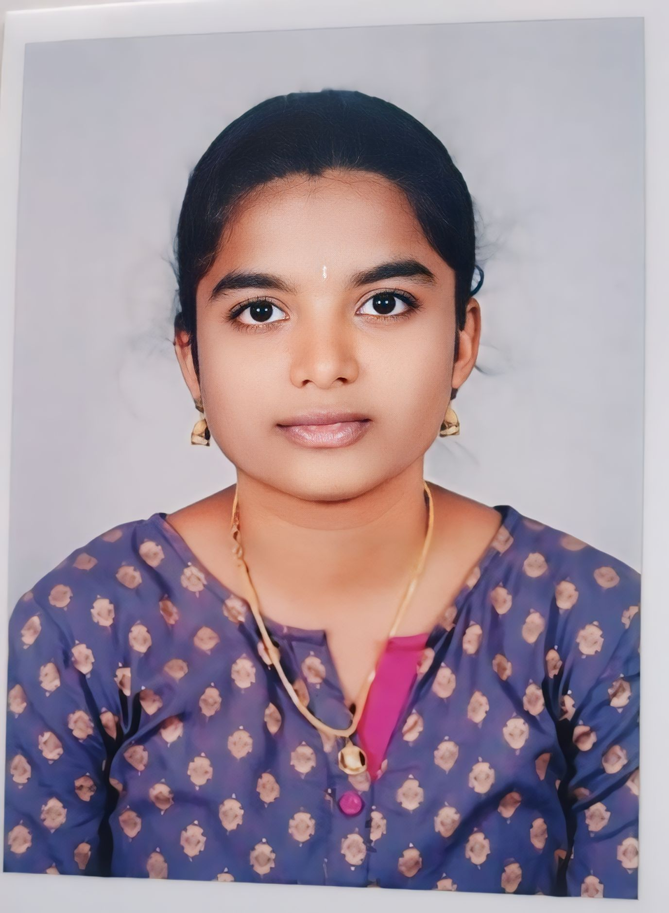

|  |
VEDICHERLA SREE NAVYA
Hyderabad, india |
srinavyavedichala@gmail.com | 9398622508
|
Motivated and detail-oriented computer science student with hands-on experience in developing CodSoft an Skilled in web development, problem-solving, and working on real-time projects. Eager to apply technical skills in a dynamic work environment and grow as a software developer
Bachelor of Technology in Computer Science and Engineering (2021-2025)
Audisankara college of Engineering and Technology, CGPA – 8.12
AI HealthCare ChatBot Using Python
Developed an AI-powered healthcare chatbot using Python and machine learning to predict diseases based on user symptoms.
Key Achievements: Successfully developed an AI-based healthcare chatbot using Python and machine learning to predict diseases from symptoms with over 95% prediction accuracy.
Technologies Used: Python,Machine Learning,Streamlit, TensorFlow, Keras, NumPy, Pandas, Scikit-learn.
Metrics: Achieved 95.68% accuracy in disease prediction using machine learning models trained on symptom-based data through a Streamlit-based chatbot interface.
Programming Languages: Python Full Stack
Web Technologies: HTML
Tools & Platforms: GitHub, VS Code, PowerPoint
Databases: SQL
Communication
Problem Solving
Teamwork
Time Management
Critical Thinking
Python for Data Science, Value laden
HTML from CODESOFT
Building with Artificial Intelligence, Saylor Academy
NPTEL Distributed systems
Learning new Programming Skills.
cooking.